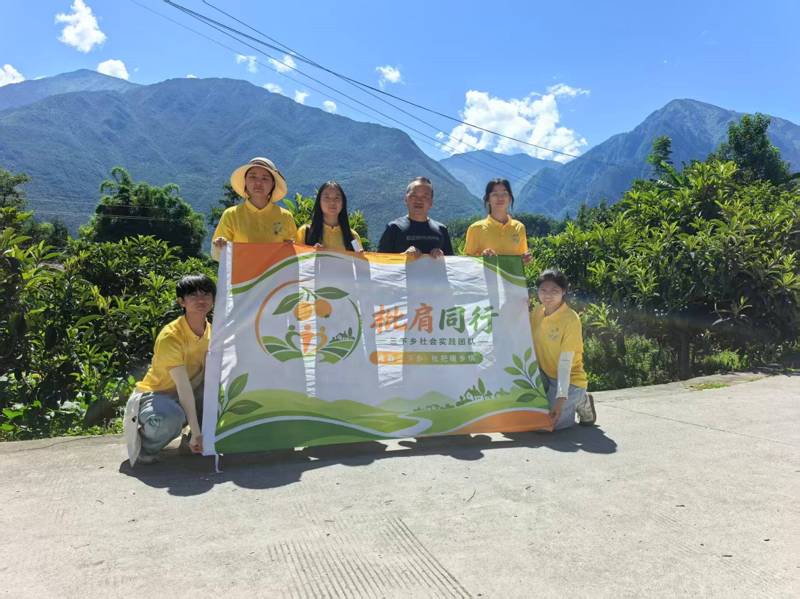
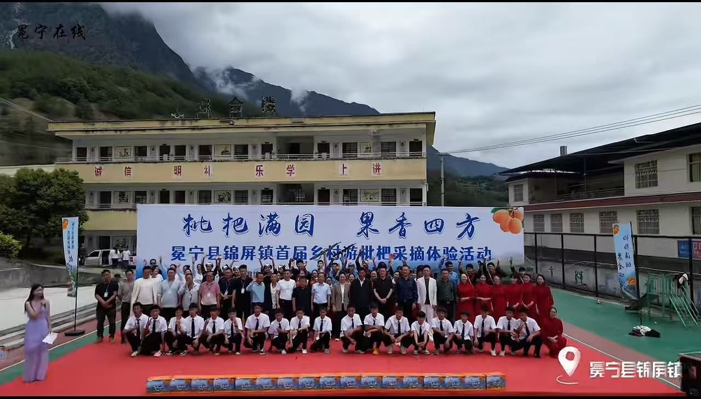
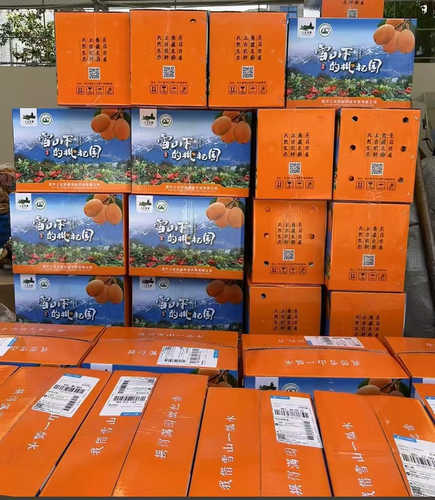
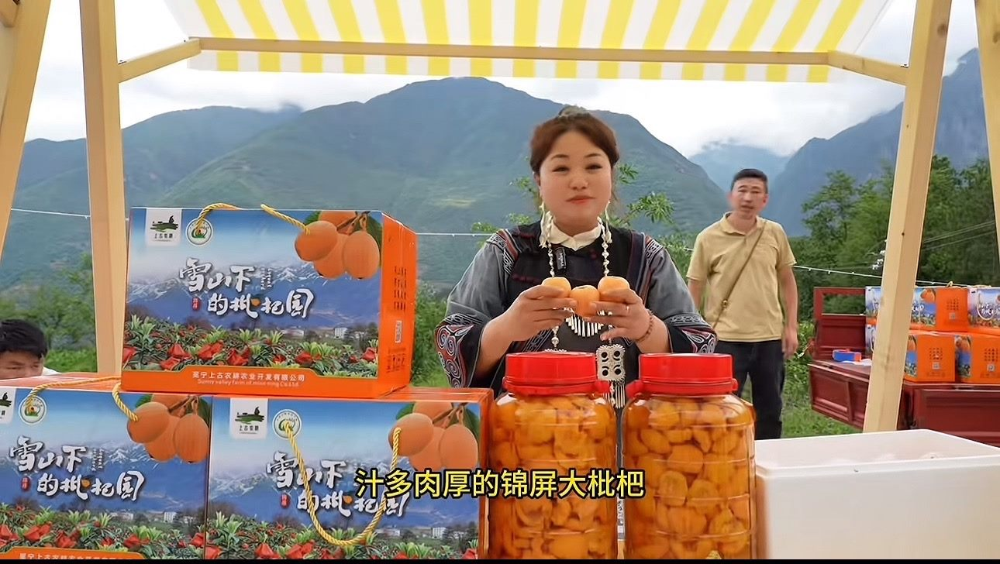

产地 · 产品 · 农户 · 采摘，从源头认识这一颗颗高山好枇杷

这是由学生团队发起的公益性助农宣传网站，目的很简单：把冕宁锦屏镇、里庄的好枇杷推出去。
冕宁早春枇杷品质出众，却因地处山区、对外宣传渠道有限，很多外地朋友并不了解。本网站不做交易与支付，只做信息的桥梁——对外讲清楚冕宁枇杷为什么好吃，展示真实果园与农户故事，为采购商、游客和消费者提供真实透明的产地信息。
本平台仅做信息展示与对接，交易由农户与采购方自行沟通，公益宣传、真实助农。
来自雅砻江河谷的高山馈赠

地处雅砻江峡谷河谷，海拔高、日照足、昼夜温差大，砂质土壤透气排水，得天独厚。

生物菌肥、草木共生、套袋管理，不使用除草剂，守护自然本味。

“团队 + 公司 + 合作社 + 农户”模式，带动里庄、锦屏村民增收致富。